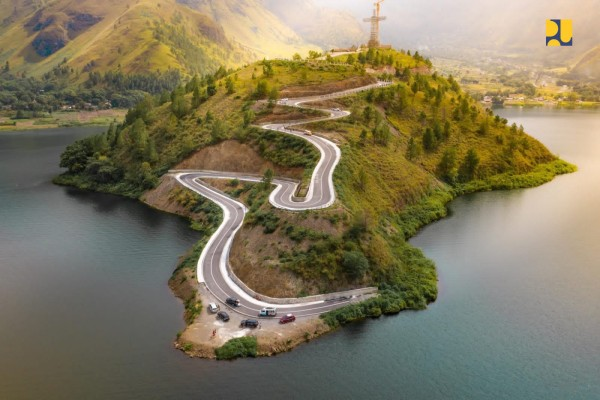

Danau Toba, Sumatera Utara
Danau vulkanik terbesar di dunia yang dikelilingi pemandangan indah dan budaya Batak yang kental.
- Pemandangan alam
- Wisata budaya
- Penginapan tepi danau
Danau vulkanik terbesar di dunia yang dikelilingi pemandangan indah dan budaya Batak yang kental.
Candi Buddha terbesar di dunia yang menjadi salah satu keajaiban dunia.
Paket 5 hari 4 malam mengunjungi Danau Toba, Bukittinggi, dan Padang.
Harga: Rp 4.500.000
Paket 3 hari 2 malam mengunjungi Candi Borobudur, Prambanan, dan Malioboro.
Harga: Rp 3.000.000